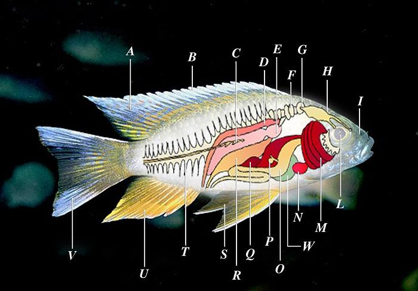
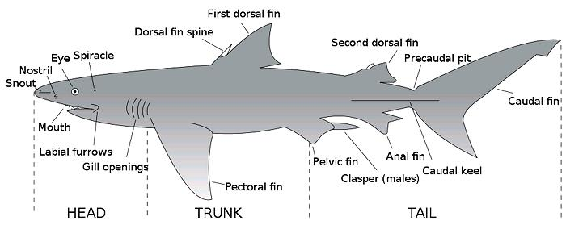
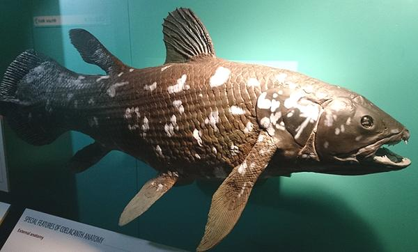

SAFARI
Users
Length of Fish
- Standard Length (SL): This length is from the tip of the nose to the aft edge of the last vertebrae. This measure is used by many fish scientists because it eliminates the length of the Caudal Fin (Tail) which can be lunate (long pointy lobes) and may change shape as the fish ages.
- Total Length (TL): This length is from the tip of the nose to the tip of the longest lobe of the Caudal Fin. If there is a long thread from the top lobe (some fish) it is ignored. This length is used by regulatory bodies when defining minimum catch sizes, etc. This is the length used on the Clovegarden site.
- Fork Length (FL): This length is from the tip of the nose to the aft edge of the Caudal Fin at its center. This measure is favored by some fish scientists as it gives a good measure of the appearance of the fish but compensates for deeply lunate tails and changes of tail shape with age.
- Sharks & Rays: These are always measured as Total Length (TL) since the last vertebrae is deep within the tail.
Ray Finned Bony Fish
This diagram is typical of ray finned bony fish, the vast majority of fish species, and almost all that appear in our fish markets. Ray finned fish appear in an incredible array of sizes and shapes, including eels, but are all made of the same components in the same general arrangement, just exaggerated in different ways. This diagram does not cover sharks and rays, which are not closely related. It also doesn't fit the bone structure of lobe finned fishes (our ancestors) which have arm and leg bones, but you are unlikely to encounter any of those. Illustration by Marrabbio2 contributed to the Public Domain (liver added).

|
A: Dorsal fin
B: Fin rays C: Lateral line (external) D: Kidney E: Swim bladder F: Weberian apparatus |
G: Inner ear:
H: Brain I: Nostrils L: Eye M: Gills N: Heart |
O: Stomach
P: Gall bladder Q: Spleen R: Sex organs (ovaries or testes) S: Pelvic fins |
T: Spine
U: Anal fin V: Caudal fin W: Liver |
- Pectoral Fins are not shown. These fins are right behind the gill covers (Opercula) on most fish, but they may be lower.
- The Swim Bladder does not appear in all fish.
- The Dorsal Fin is comprised of two regions. To the front are spiny rays, often very sharp. At the rear end are the soft rays. The spiny and soft ray regions may be divided into separate fins.
- Gill Rakers are a comb-like structure on the inner edge of each gill to prevent food from escaping through the gills.
- The Adipose Fin appears on many fish. It is a small, fleshy, rayless fin aft of the dorsal soft rays. Its purpose is still unknown.
- Barbels are long fleshy projections from the lower lip of some fish, catfish for instance, which help locate food in sand and mud.
- Only Ostariophysian fish have the Webearian Apparatus (Milkfish, Catfish, Piranhas, Carp). This device couples the swim bladder to the inner ear, greatly enhancing hearing.
- The Skirt is our term for the fleshy wall enclosing the belly of the body cavity. It is not official, but convenient for describing fish fillets.
- Pinbones is a culinary term for the sharp bones you must pull out forward along the centerline, one for each rib. I haven't found a scientific word for them.
Sharks & Rays
When the modern bony, ray fined fish (Teleostei) appeared, the older types were under great pressure due to being eaten by the new fish. One branch of the older fish responded by very rapidly evolving in two directions - adopting some characteristics of its own predecessors, but also evolving forward well beyond the Teleostei.
Advanced features include a bigger, more complex brain, allowing a much more sophisticated social structure, internal fertilization and live birth, and an array of very sensitive sensory organs for variations in water pressure, sight, smell and minute electrical charges. Some even developed a degree of warm bloodedness. So successful were these adaptations, the following era is called "The Age of Sharks", and it was the Teleostei who had to worry about getting eaten to extinction. Illustration by Chris_huh, contributed to the Public Domain .

- The shark Skeleton is not bony, but cartilaginous. This relatively primitive structure is light weight, allowing sharks to become quite large. They can also get along without a swim bladder, enabling more vertical freedom in the water column. Actually, sharks have negative buoyancy and their swimming is more like flying. If not swimming or resting on the bottom, they will sink.
- Shark Scales are actually teeth, very hard and difficult to penetrate. Many cultures use shark skin for sandpaper and graters.
- Shark Teeth are structured the same as their scales. They are in several rows, and the front teeth are continuously replaced over the life of the shark. Their teeth are shaped for ripping, not chewing.
- Shark Blood contains a large amount of urea so as to be in osmotic balance with seawater, so most sharks can't survive in fresh water, but some with modified kidneys can. When a shark dies, bacteria degrade the urea into ammonia, so sharks must be well bled when caught, and eaten or frozen in a short time. Do not buy shark or skate meat that smells strongly of ammonia, it is not fresh.
- Shark Tails are quite asymmetrical, because the spine curves up into the top lobe, allowing powerful propulsion and high swimming speed.
- Rays and Skates are sharks who's pectoral fins have become so large they are like wings. These sharks are mostly, but not entirely, bottom dwellers. Rays give live birth, while Skates lay eggs. The giant Manta Rays are deep water filter feeders. Once feared, scuba divers have shown them to be harmless and even friendly.
- Temperature: Most sharks are cold blooded, but some of the most active predators can keep their body temperature above ambient for more vigorous activity than cold blooded fish can manage.
- Most sharks give Live Birth to fully developed young up to 2 feet long and able to fend for themselves. Some nourish their young by placental attachment like mammals. Others use a different system where some nourishment comes from the mother, but the first young to hatch also eat unhatched eggs, and sometimes each other. This produces few but relatively large well developed offspring. Rays and some smaller sharks have returned to producing eggs, generally in leathery sacks.
- Shark Brains are similar in size compared to body mass to birds and some mammals. Most tend to be quite social, and display curiosity and play behavior similar to birds and mammals.
- The Spiracle is a special gill that feeds oxygen directly to the eyes and brain. Teleostei fish do not have this feature, but then they hardly have brains.
Lobe Finned Fish
In case you are curious as to what your remote ancestors looked like, here is one of their relatives that still lives today. Coelacanths date from about 400 million years ago, and were thought long extinct until science was shown living examples in 1938. Note that the pectoral and pelvic fin pairs are on stems, which contain the jointed bones which eventually developed into the arms and legs we enjoy today. These fin stems are anchored to well developed internal bone structures. Some species were quite lizard-like in shape, as is the related (and still living) Queensland Lungfish. Living lobe finned fish are noted for possessing either vestigial or functioning lungs. All in all, they are more closely related to amphibians, reptiles and mammals than they are to the ray finned bony fish.

Photo by Nkansah Rexford, distributed under license Creative
Commons
Attribution Share-Alike v3.0 Unported.